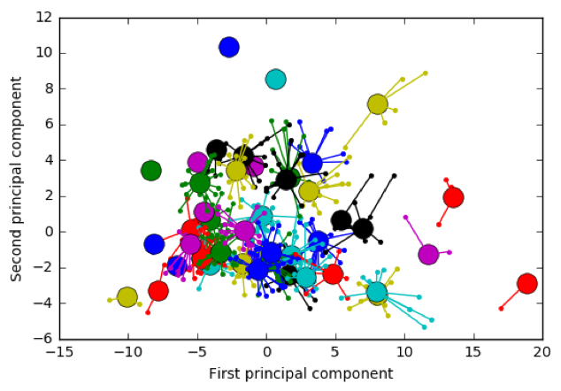
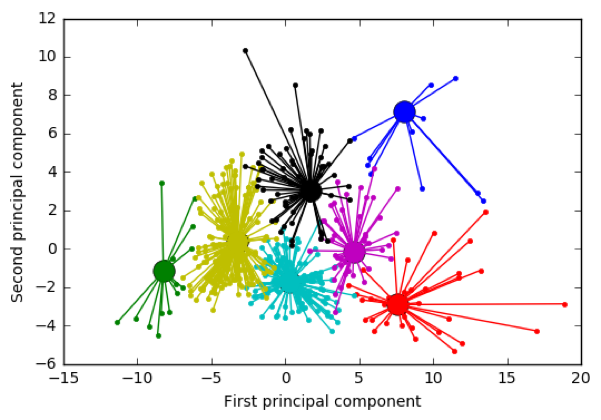
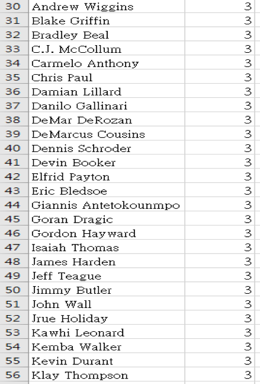
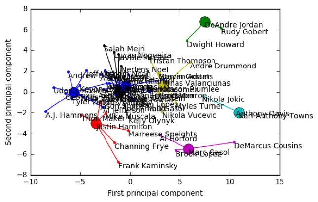
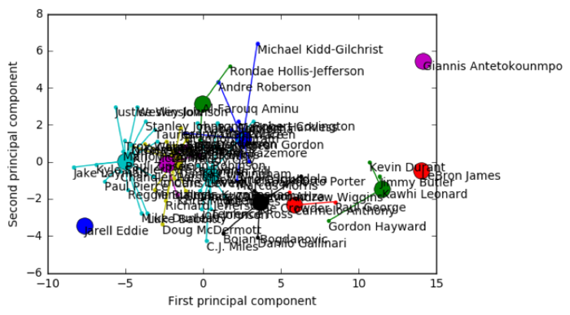
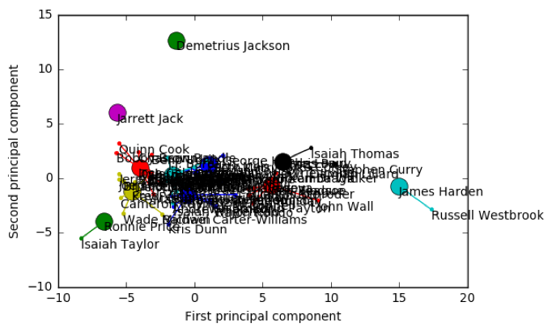
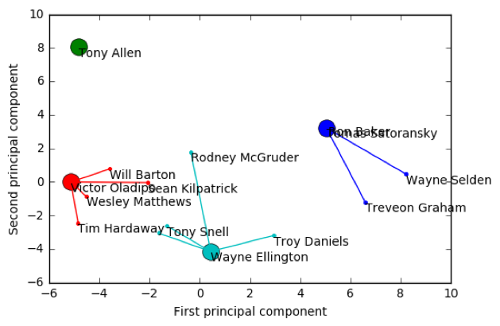

概念發想Concept
我們將自己設想為球隊分析師，並希望能遞上一份不讓老闆"打臉"的分群資料，提供球隊高層在球員交易、補強、替代方案上有份合理客觀的依據。
We envision ourselves as team analysts, and hope to hand over a group of information that provides the team’s top management with a reasonable and objective basis for player trading, reinforcement, and alternatives.
操作方法Operation
將NBA所有球員資料(Ex: 薪水、年齡、得分、助攻、有效命中率、真實命中率、球權佔有率、籃板率、效率值…)，以AP演算法實作，計算各球員資料的負歐積里德距離，調整preference、Damping Factor參數，求出k個高質量聚類，且我們將多維度的資料透過PCA()方法壓縮為低維度的資料，實現可視化。
All NBA player information (Ex: salary, age, score, assists, effective hit rate, true hit rate, possession rate, rebound rate, efficiency value…) is calculated by AP algorithm to calculate each player’s data. The negative Ourich Reed distance, adjust the preferences, Damping Factor parameters, find k high-quality clusters, and we compress the multi-dimensional data into low-dimensional data through PCA () method to achieve visualization
資料來源 ： (https://www.kaggle.com/acasalan/nba-player-stats-201718)
實作結果 Result
調整參數 Adjust parameter:
- Preference:
Preference = 中位數(-62.5683289159)
群集數: 43

Preference = -500
群集數: 7

- Damping Factor:
Damping Factor = 0.5 --> Time = 0.8640606880187988 seconds.
Damping Factor = 0.9 --> Time = 1.2220699787139893 seconds.
所有球員資料 All players:

依球員打球的位置 According to position
-
center © : 8群集數
 -
power forward (PF) : 8群集數
-
small forward (SF) : 12群集數
 -
point guard (PG) : 11群集數
 -
shooting guard (SG) : 4群集數

依不同屬性
進攻性質 or 防守性質…
延伸探討 Any imperfect ?
然而在我們丟入的data有其盲點存在,NBA的老闆或球隊在選擇球員上,並不會只觀看球員在場上的數據表現,還包括許多因素,事無法量化或在數據表現出來的(包括球員心理狀態、球員間磨合度…)
However, the data we throw in has its blind spots. The NBA boss or team is not only watching the performance of the players on the field, but also includes many factors, which cannot be quantified or expressed in the data. (including the player’s mental state, the player’s running-in…)
如下:
❖商業價值 ex: Dwyane Wade
Wade是大家耳熟能詳的巨星,層經出現在2K遊戲的封面上,但最近的數據表現並不如其他球員出色,但仍是有淺力的球員,也累積許多粉絲,粉絲能帶來商業價值。
❖球員背景 ex: Jeremy Lin
Jeremy是著名的台裔球員,能吸引亞洲地區的球迷觀注其球隊,帶來利益。
❖健康因素 ex: Derrick Rose
Rose是最年輕獲選MVP的球員,但由於前幾賽季腳傷原因,造成都個
賽季缺賽,而傷後復出便不如以前突出,這也是無法顯現在數據上的。